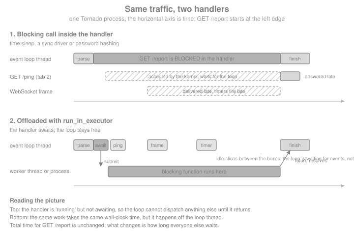

Asynchronous I/O & the Event Loop
|
This content was generated with the assistance of AI and should be verified against the official documentation before being relied on in production. |
This page is written against Tornado 6.5.10 (released 2026-09-15), checked on 2026-10-07, on Python 3.13. Tornado 6.6
is only available as the alpha 6.6a1; the 6.6 changes mentioned below are marked as upcoming. Every timing is
illustrative: it comes from a laptop and the assertions in the examples use wide margins. The asyncio library itself
is covered in the Python Reference, in
Concurrency & Async; this page is about what Tornado
does with it, what stalls it, and how the Bookshelf Live handlers stay responsive.
Tornado makes one bet: a web server spends most of its life waiting (for a client to send bytes, for a database to answer, for a metadata service to reply), so one thread that never waits can serve thousands of connections. The price is a contract. Every handler runs on that one thread, and a handler that does not give control back stalls every other connection, timer and WebSocket in the process. Most of this page is about keeping that contract.
Blocking and Non-Blocking I/O
A function is synchronous when it finishes its work before returning, and asynchronous when it returns before the work is done and delivers the result later (through a future, in modern Tornado). A function blocks when it waits for something before returning: a socket read, a disk read, a sleep, or a long computation on the CPU. The Tornado guide makes the point that every function blocks a little while it uses the CPU; what matters is whether the pause is short enough that nobody notices.
Two designs serve many users at once:
-
Thread (or process) per request. The classic WSGI model, described for Flask in Introduction & Architecture. Blocking is harmless because the operating system switches between threads, but every connection that is merely idle still costs a thread.
-
One event loop. The thread asks the operating system which of its sockets are ready and runs the code waiting for them, one piece at a time. Waiting is free, but code that does not wait for I/O is not preempted either: only one piece of Python runs at a time and it runs until it returns or reaches an
await.
Tornado is the second design (its place among the frameworks is discussed in
Introduction & Architecture). An await is the only point
where a handler hands control back, which is why the rule of thumb is so short: inside a handler, wait only with
await. Compare the other async options on this site: Flask’s async def views still run one request per worker (see
Async, gevent & Quart), and FastAPI runs plain def endpoints in a
thread pool for you (see Async & Concurrency). Tornado does neither: a
plain call in a handler body runs on the loop thread, whether the handler is async def or not.
The Single-Threaded Event Loop
One loop iteration waits for I/O readiness (using epoll, kqueue or select, whichever the platform offers), then
runs every callback that became ready: parsing a request, resuming a handler after an await, firing a timer. Because
callbacks run strictly one after another, handler code needs no locks for data that only the loop thread touches: a
plain dictionary of WebSocket subscribers is safe. That is the benefit the blocking rule buys.

The next example makes the diagram measurable. It builds a tiny Bookshelf Live application with a ping handler and
three ways to produce a slow report (blocking, awaiting, offloaded), serves it on a loopback port, and measures when
/ping is answered, counted from the moment a slow report was requested. The slow work is a local fake: time.sleep stands in for a
synchronous database driver.
import asyncio
import contextlib
import time
from tornado.httpclient import AsyncHTTPClient
from tornado.httpserver import HTTPServer
from tornado.ioloop import IOLoop
from tornado.testing import bind_unused_port
from tornado.web import Application, RequestHandler
def legacy_driver_report() -> dict:
"""Stands in for a synchronous driver call: blocks the calling thread."""
time.sleep(0.5)
return {"books": 42}
class PingHandler(RequestHandler):
async def get(self):
self.write({"pong": True})
class BlockingReportHandler(RequestHandler):
async def get(self):
# BAD: an async def handler, but the body blocks the whole loop.
self.write(legacy_driver_report())
class AwaitingReportHandler(RequestHandler):
async def get(self):
await asyncio.sleep(0.5) # a real async driver would be awaited here
self.write({"books": 42})
class OffloadedReportHandler(RequestHandler):
async def get(self):
# The blocking call runs on a worker thread; the loop stays free.
report = await IOLoop.current().run_in_executor(None, legacy_driver_report)
self.write(report)
def make_app() -> Application:
return Application([
(r"/ping", PingHandler),
(r"/report/blocking", BlockingReportHandler),
(r"/report/awaiting", AwaitingReportHandler),
(r"/report/offloaded", OffloadedReportHandler),
])
@contextlib.asynccontextmanager
async def serving(app: Application):
"""Serve `app` on an unused loopback port for the duration of the block."""
sock, port = bind_unused_port()
server = HTTPServer(app)
server.add_sockets([sock])
try:
yield f"http://127.0.0.1:{port}"
finally:
server.stop()
await server.close_all_connections()
async def ping_answered_after(base: str, report_path: str) -> float:
"""Request a slow report, ask for /ping 0.05 s later, return when /ping was answered."""
client = AsyncHTTPClient()
started = time.perf_counter()
report = asyncio.ensure_future(client.fetch(base + report_path))
await asyncio.sleep(0.05)
await client.fetch(base + "/ping")
answered = time.perf_counter() - started
await report
return answered
async def main():
async with serving(make_app()) as base:
results = {}
for name in ("blocking", "awaiting", "offloaded"):
results[name] = await ping_answered_after(base, f"/report/{name}")
for name, answered in results.items():
print(f"{name:10s} /ping answered after {answered * 1000:5.0f} ms")
assert results["blocking"] > 0.4 # the ping had to wait for the blocked handler
assert results["awaiting"] < 0.3
assert results["offloaded"] < 0.3
asyncio.run(main())With the blocking handler /ping is answered only after roughly 500 ms, once the sleep is over; with the other two it
is answered after about 50 ms, the delay before it was even requested. The client and the server share one loop in this
test, so the blocked loop also delays the client from sending the ping; in production the effect is the same, with
the ping waiting in the kernel’s socket buffer instead. Notice that the handler is declared with async def in all three cases. Declaring a handler
async def does not make its body non-blocking; only awaiting something does.
What Blocks the Loop
Anything that keeps the loop thread busy without an await blocks it: waiting on I/O through a synchronous API or
burning CPU. The table lists the usual offenders in a Bookshelf Live codebase and the fix for each.
| Blocking call | Why it blocks | Fix |
|---|---|---|
|
Parks the thread for |
|
Synchronous DB driver ( |
Each query waits on a socket or on the disk with no |
An async driver ( |
|
Same: a blocking socket call |
|
Password hashing ( |
Tens or hundreds of milliseconds of deliberate CPU work per login |
|
Image resizing, PDF rendering, large JSON or CSV parsing, regex on large input |
CPU-bound work on the loop thread |
A process pool, or a task queue such as Celery |
Synchronous file I/O of large files |
A disk read is a blocking system call |
|
|
Waits for another thread |
Use |
|
Runs the whole WSGI app on the loop thread |
Avoid under load; since 6.3 it accepts an |
Source: Tornado FAQ
An async driver is always the best fix, because it overlaps the waits of many requests on the loop thread without any extra thread. The executor options below are what you use when no async driver exists or when the work is CPU.
Offloading Blocking Work
IOLoop.run_in_executor(executor, func, *args) submits func(*args) to a concurrent.futures.Executor and returns an
awaitable that resolves with the result, or raises the exception the function raised. Passing None as the executor
uses the loop’s default executor: a ThreadPoolExecutor that Tornado creates on first use with cpu_count() * 5
threads (an implementation detail; do not depend on the number). Keyword arguments go through functools.partial,
because the signature only takes positional ones.
import functools
import hashlib
import secrets
def hash_password(password: str, salt: bytes, n: int = 2 ** 14) -> bytes:
"""CPU-heavy by design: this is what makes stolen password hashes hard to crack."""
return hashlib.scrypt(password.encode(), salt=salt, n=n, r=8, p=1)
class LoginHandler(RequestHandler):
async def post(self):
password = self.get_body_argument("password")
salt = secrets.token_bytes(16)
# Positional arguments go through run_in_executor, keyword ones through partial.
digest = await IOLoop.current().run_in_executor(
None, functools.partial(hash_password, password, salt, n=2 ** 14)
)
self.write({"hash_length": len(digest)})
async def check_login():
app = Application([(r"/login", LoginHandler)])
async with serving(app) as base:
response = await AsyncHTTPClient().fetch(
base + "/login", method="POST", body="password=correct-horse"
)
print(response.code, response.body)
assert response.code == 200
asyncio.run(check_login())Source: Tornado: IOLoop.run_in_executor
(The handler stores nothing and returns only the digest length; a real login stores the salt and digest and compares
with hmac.compare_digest. The password in the request body is a throwaway demo value for the local test.)
Choose the executor by what the function does:
| Executor | Use it for | Caveats |
|---|---|---|
Default thread pool ( |
Blocking I/O through a synchronous library; C libraries that release the GIL (hashing, compression, many database drivers) |
Threads share memory, so the function must not touch loop-owned state. Pure-Python CPU work does not run in parallel with the loop thread because of the GIL, and slows it down instead |
Your own |
The same, with a bound that protects a connection pool or a rate limit |
Pass it explicitly, or install it with |
|
Pure-Python CPU work: image processing, scoring, parsing |
The function and its arguments are pickled, so the function must be importable from a module (not defined in |
Source: Python: concurrent.futures
The next example runs a pure standard-library function in a process pool and then bounds the default thread pool.
hashlib.pbkdf2_hmac is a built-in that pickles by reference, so no helper module is needed here; in your project,
put such functions in a module of their own. The if __name__ == "__main__": guard is required: with the spawn start
method (the default on macOS and Windows; Linux switched to forkserver in Python 3.14) each worker
re-imports the main module, and without the guard it would start the program again.
# norun (needs a real script with a __main__ guard; verified separately as a standalone file)
import asyncio
import hashlib
import secrets
import threading
from concurrent.futures import ProcessPoolExecutor, ThreadPoolExecutor
from tornado.ioloop import IOLoop
async def offload_demo():
loop = IOLoop.current()
with ProcessPoolExecutor(max_workers=2) as pool:
salt = secrets.token_bytes(16)
digest = await loop.run_in_executor(
pool, hashlib.pbkdf2_hmac, "sha256", b"correct-horse", salt, 200_000
)
print("process pool digest bytes:", len(digest))
# Bound the default executor instead of living with cpu_count() * 5 threads.
with ThreadPoolExecutor(max_workers=4, thread_name_prefix="bookshelf-blocking") as small:
loop.set_default_executor(small)
name = await loop.run_in_executor(None, lambda: threading.current_thread().name)
print("default executor thread:", name)
assert name.startswith("bookshelf-blocking")
if __name__ == "__main__":
asyncio.run(offload_demo())Three details trip people up:
-
The pool is a queue. A handler that offloads waits in line when all
max_workersthreads are busy. A flood of slow logins therefore queues in the executor and the loop stays healthy, but the latency of each login grows. Put a limit in front (for example anasyncio.Semaphorearound the call) when you need to shed load instead. -
Cancelling the wait does not cancel the thread.
tornado.gen.with_timeoutorasyncio.wait_foraround an executor call abandons the wait; the function keeps running to the end. -
Context variables do not travel.
IOLoop.run_in_executorsubmits the function directly, so acontextvarsvalue set in the handler is not visible inside the worker thread.asyncio.to_threadcopies the current context first. Pass what the function needs as arguments.
The first two points follow from the contract of concurrent.futures; the third is easy to confirm:
import contextvars
request_id = contextvars.ContextVar("request_id", default="unset")
async def context_demo():
request_id.set("req-1")
loop = IOLoop.current()
via_tornado = await loop.run_in_executor(None, request_id.get)
via_to_thread = await asyncio.to_thread(request_id.get)
print("run_in_executor sees:", via_tornado, "| asyncio.to_thread sees:", via_to_thread)
assert via_tornado == "unset"
assert via_to_thread == "req-1"
asyncio.run(context_demo())Source: Python: asyncio.to_thread
asyncio.to_thread is a fine alternative to run_in_executor(None, ...) when you want the context copy; it uses
asyncio's own default executor rather than the pool installed with Tornado’s set_default_executor, which matters if
you tuned that one. There is also a decorator, tornado.concurrent.run_on_executor, which marks a method as "runs on
self.executor and returns a future". The Tornado docs recommend calling run_in_executor at the call site instead
and describe the decorator as discouraged in new code.
IOLoop Is a Wrapper over asyncio
Since Tornado 5.0 (2018) the IOLoop has no event-loop implementation of its own: it is a thin wrapper that exposes
Tornado’s API on top of the asyncio event loop, and Tornado’s futures are asyncio futures. That is why Tornado
handlers can await any asyncio coroutine, why asyncio.gather works in a handler, and why an asyncio library (an
async driver, an HTTP client, a cloud SDK) can share the loop with Tornado. The wrapper exposes the underlying loop as
IOLoop.asyncio_loop.
async def loop_identity():
running = asyncio.get_running_loop()
io_loop = IOLoop.current()
print("same loop:", io_loop.asyncio_loop is running)
assert io_loop.asyncio_loop is running
# Tornado's scheduling API and asyncio's are two views of the same loop.
fired = []
io_loop.call_later(0.01, fired.append, "tornado call_later")
running.call_later(0.02, fired.append, "asyncio call_later")
await asyncio.sleep(0.05)
print(fired)
assert fired == ["tornado call_later", "asyncio call_later"]
asyncio.run(loop_identity())Start the server with asyncio.run(main()), as in the examples on this page: since Tornado 6.2 that is the
recommended entry point, and the older IOLoop.current().start() and IOLoop.instance() forms are legacy that you
will still see in older tutorials. Two helpers remain useful in scripts and tests: IOLoop.run_sync(func, timeout=...)
runs one coroutine to completion on the loop and returns its result, and IOLoop.add_future(future, callback)
schedules a callback when a future completes. Windows is not officially supported for production use; there Tornado
works around the default Proactor event loop with a selector thread of its own, which is one more reason to deploy on
Linux.
The tornado.platform.asyncio module also keeps a few helpers from the time when Tornado and asyncio had separate
futures, such as to_asyncio_future; with Tornado 6 they are deprecated or redundant. Native coroutine details,
gather, timeouts and the legacy @gen.coroutine style belong to
Coroutines & asyncio.
Thread Rules
Tornado application code is not thread-safe: handlers, the Application, the IOLoop and the connections all assume
they are used from the loop thread only. The single exception is IOLoop.add_callback: it is the only IOLoop method
that may be called from another thread, and it schedules a function to run on the loop thread at the next iteration.
Anything a worker thread wants to tell the application (a finished job, a new review from an integration thread) must
cross that bridge.
import threading
class ReviewFeed:
"""Loop-thread-only state: other threads may reach it only through add_callback."""
def __init__(self):
self.reviews: list[str] = []
self.arrived = asyncio.Event()
def publish(self, review: str) -> None:
# Runs on the loop thread, so no lock is needed.
self.reviews.append(review)
self.arrived.set()
async def thread_to_loop():
feed = ReviewFeed()
io_loop = IOLoop.current()
seen_in = {}
def integration_thread():
# Wrong: feed.publish("...") here would touch loop state from a worker thread.
# Right: ask the loop to do it.
io_loop.add_callback(lambda: seen_in.update(thread=threading.current_thread().name))
io_loop.add_callback(feed.publish, "Great read, five stars")
threading.Thread(target=integration_thread, name="integration").start()
await asyncio.wait_for(feed.arrived.wait(), timeout=2)
print(feed.reviews, "published from thread:", seen_in["thread"])
assert feed.reviews == ["Great read, five stars"]
assert seen_in["thread"] == threading.main_thread().name
asyncio.run(thread_to_loop())Source: Tornado: IOLoop.add_callback
For a coroutine instead of a plain function, the asyncio spelling is asyncio.run_coroutine_threadsafe(coro, loop),
which returns a concurrent.futures.Future the thread can wait on. In the other direction (loop code waiting for a
thread’s result), use run_in_executor and await it. Other rules to keep:
-
Never call
RequestHandler.writeorfinish, touch aWebSocketHandler, or callIOLoop.add_timeoutfrom a worker thread. -
tornado.locksandtornado.queuesare coroutine-safe but not thread-safe; usequeue.Queueandthreading.Lockat thread boundaries, never in loop code. -
IOLoop.add_callback_from_signalis deprecated since 6.4 and slated for removal in 7.0; useloop.add_signal_handlerfrom asyncio for signals. -
IOLoop.spawn_callbackis, since 6.0, identical toadd_callback.
Using More Than One CPU
One loop uses one core. To use the others, run one Tornado process per core. Tornado’s helper
tornado.process.fork_processes(num_processes) forks workers that share a listening socket created before the fork;
tornado.process.task_id() tells each child its index. The constraints are strict: no IOLoop may be created or
referenced before the fork, and it is not compatible with autoreload (so not with debug=True). Since 6.2 the older
TCPServer.bind() and start(n) multi-process form is deprecated, so the pattern is: bind sockets, fork, then create
the loop and the server in each child.
# norun (forks processes; shown, not executed by the page runner)
import asyncio
import tornado.process
from tornado.httpserver import HTTPServer
from tornado.netutil import bind_sockets
from tornado.web import Application
def make_app() -> Application:
...
async def post_fork_main(sockets):
server = HTTPServer(make_app())
server.add_sockets(sockets)
await asyncio.Event().wait()
if __name__ == "__main__":
sockets = bind_sockets(8888) # before the fork
tornado.process.fork_processes(0) # 0 means one child per core
asyncio.run(post_fork_main(sockets)) # after the fork, in each childSource: Tornado: tornado.process
In containers and under Kubernetes it is usually simpler to run a single-process Tornado per container and scale replicas, the same advice as for FastAPI and Flask (see Docker and Kubernetes). The nginx-based topology of Bookshelf Live belongs to Running & Deploying.
Finding What Blocks
A blocking call is invisible until traffic arrives, so look for it before then. asyncio ships the tool: debug mode
logs a warning for every callback or task step that holds the loop longer than loop.slow_callback_duration (0.1
seconds by default). Start the program with python -X dev, set PYTHONASYNCIODEBUG=1, or call
asyncio.run(main(), debug=True); Tornado handlers are asyncio tasks, so they are covered.
import logging
async def find_blocker():
captured = []
class Capture(logging.Handler):
def emit(self, record):
captured.append(record.getMessage())
handler = Capture()
logger = logging.getLogger("asyncio")
logger.addHandler(handler)
try:
async with serving(make_app()) as base:
await AsyncHTTPClient().fetch(base + "/report/blocking")
finally:
logger.removeHandler(handler)
slow = [m for m in captured if "took" in m and "seconds" in m]
print("took" + slow[0].split("took")[1] if slow else "nothing captured")
assert slow, "debug mode should have reported the slow callback"
asyncio.run(find_blocker(), debug=True)Debug mode costs performance, so enable it in development and in tests, not in production. In production, watch the
loop’s own latency: a periodic callback that measures how late it fires is a cheap "loop lag" metric, and a rising lag
means something is blocking. Lower loop.slow_callback_duration while hunting for smaller stalls.
Testing That Nothing Blocks
tornado.testing.AsyncHTTPTestCase starts the application on a loopback port with a fresh loop for each test, and
test methods that are async def need the tornado.testing.gen_test decorator (without it the test fails with a
TypeError that says so). A regression test for the blocking contract is a latency assertion: start the slow
endpoint, then check that a cheap one is answered promptly. The test below reuses the handlers from the first example.
import unittest
from tornado.testing import AsyncHTTPTestCase, gen_test
class LoopResponsivenessTest(AsyncHTTPTestCase):
def get_app(self):
return make_app()
async def _ping_while(self, path: str) -> float:
"""Return how long after the slow request /ping was answered."""
started = time.perf_counter()
report = asyncio.ensure_future(self.http_client.fetch(self.get_url(path)))
await asyncio.sleep(0.05)
response = await self.http_client.fetch(self.get_url("/ping"))
elapsed = time.perf_counter() - started
self.assertEqual(response.code, 200)
await report
return elapsed
@gen_test
async def test_offloaded_report_does_not_stall_ping(self):
self.assertLess(await self._ping_while("/report/offloaded"), 0.3)
@gen_test
async def test_blocking_report_stalls_ping(self):
# Documents the bug this page is about; real suites assert the opposite.
self.assertGreater(await self._ping_while("/report/blocking"), 0.4)
suite = unittest.defaultTestLoader.loadTestsFromTestCase(LoopResponsivenessTest)
result = unittest.TextTestRunner(verbosity=2).run(suite)
assert result.wasSuccessful()Source: Tornado: tornado.testing
Two Browser Tabs Look Serialized
The Tornado FAQ answers a question that sends newcomers looking for a bug that is not there: "I wrote an async handler, opened it in two tabs, and the second tab waited for the first." Browsers delay a second request for the same URL until the first one finishes, so the requests never reach the server together. The server is fine. Verify by making the URLs different (a query parameter is enough), or by using two different browsers:
# Start the app, then fire two overlapping requests with curl
curl -s "http://127.0.0.1:8888/report/awaiting?x=1" &
curl -s "http://127.0.0.1:8888/report/awaiting?x=2" &
waitBoth commands finish after about 0.5 seconds in total for the awaiting handler, not 1.0. The trap has an inverse: with a blocking handler the requests really are serialized, but by the server and not by the browser, so rule out the handler as well. The same overlap, measured from Python:
async def overlap_demo():
async with serving(make_app()) as base:
client = AsyncHTTPClient()
started = time.perf_counter()
await asyncio.gather(*(client.fetch(f"{base}/report/awaiting?x={i}") for i in range(5)))
elapsed = time.perf_counter() - started
print(f"five awaiting reports took {elapsed:.2f} s")
assert elapsed < 1.0 # about 0.5 s, not 2.5 s
asyncio.run(overlap_demo())Source: Tornado FAQ
Free-Threaded Python
Python 3.13 introduced an optional free-threaded build without the global interpreter lock, and Tornado 6.5 (2025) supports it on an experimental basis; prebuilt wheels were not available at that release, so you build from source. What free-threading changes for this page:
-
The event loop still runs your handlers on one thread. Free-threading does not make a single Tornado process parallel and does not remove the blocking rule.
-
Worker threads started with
run_in_executorcan run pure-Python CPU work in parallel with each other and with the loop thread, so a thread pool becomes a plausible alternative to a process pool for CPU-bound handlers (no pickling, shared memory). -
Thread-safety rules get stricter, not looser: with no GIL serializing bytecode, cross-thread access to loop-owned state is a genuine data race.
add_callbackis still the only bridge.
Treat it as an experiment: measure on your workload and keep the multi-process deployment as the default.
Pitfalls Checklist
-
async defis not magic. A handler with noawaitruns entirely on the loop thread, exactly as adefhandler would; any blocking call inside it blocks the process. -
prepare(),on_finish(),initialize()andwrite_error()run on the loop too. A synchronous session lookup inpreparestalls every request. The same holds for authentication helpers, template rendering of huge pages andjson.dumpsof very large objects. -
Logging to a slow sink. A
logging.Handlerthat writes to a network socket blocks the loop; use alogging.handlers.QueueHandlerwith a listener thread. -
Sleeping to retry. Replace
time.sleepin retry loops withawait asyncio.sleep. -
Fire-and-forget without a reference. A task created with
asyncio.ensure_futureand never awaited or stored can be garbage-collected, and its exceptions are only logged. Background work is covered in Coroutines & asyncio. -
Unbounded fan-out.
asyncio.gatherover ten thousand fetches opens a lot of sockets.AsyncHTTPClient'smax_clients(default 10) queues the rest, but the queue is yours to bound; the worker-pool pattern is in Queues & Locks. -
CPU work "just this once". Hashing a password costs the same on the loop as anywhere else; do the arithmetic before deciding it is small (100 ms per login at 10 logins per second saturates one loop).
-
One process, one core. A healthy loop still caps at one core; scale with processes.
Recent Changes and Outdated Material
| Version | Change that matters here |
|---|---|
5.0 (2018) |
|
6.0 (2019) |
Python 2 dropped; |
6.2 (2022) |
|
6.3 (2023) |
|
6.4 (2023) |
|
6.5 (2025) |
Python 3.14 supported, free-threaded Python 3.13 experimental |
6.6 (upcoming, alpha 6.6a1 only) |
Python 3.11 or newer required; a zero timeout now means "immediately" |
Source: Tornado: Release notes
Older material (including recipes in older Flask cookbooks that embed Tornado with IOLoop.instance().start(),
@tornado.web.asynchronous or callback= arguments) predates these versions. Motor, the async MongoDB driver that
older Tornado tutorials pair with the framework, was deprecated by MongoDB in 2025 in favour of PyMongo’s native
AsyncMongoClient. The migration summary for the whole section is collected in
What’s Changed & Migration.